Yukuhashi
Yukuhashi · Fukuoka
Yukuhashi
Highlighted on the Fukuoka map.
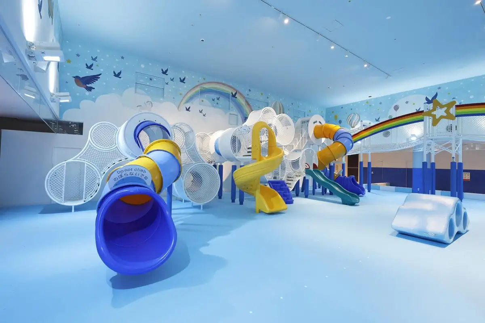
Sights
Yukuhashi Shitsunai Kata Kodomo no Asobiba
Mino Shima Beach
Nagai Hama Coast Shiohigari Ri (Mate Hori)
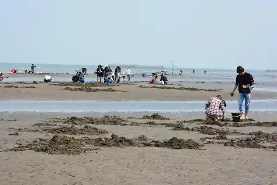
Yukuhashi Sakana Market
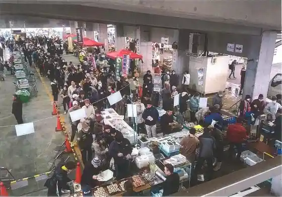
Nagai Hama Beach
Matsukaze Kai Hikari Center (Ichijiku So Hana)
Yukuhashi Oto Campground
Nagai Hama Park
Goshogatani Kami Komoriishi
Imai Tsu Susa Shrine
Yukuhashi Botanical Garden
Jo Ki Tera
Keichiku Megumi no Sato Yukuhashi Mise
Yukuhashi History Museum
Umagagaku Castle Ruins
Imagawa Kahan
Dai Village Otsuki Do
Marin'akuteibitei 2026
Dining
や台ずし 行橋駅前町
Ya Dai Zushi Yukuhashi Ekimae Machi

牛角 行橋店
Gyuukaku Yukuhashi Mise
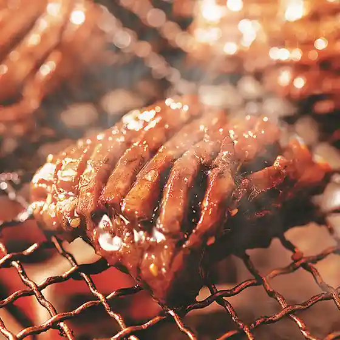
焼肉 とり将軍 行橋店
Yakiniku Tori Shougun Yukuhashi Mise
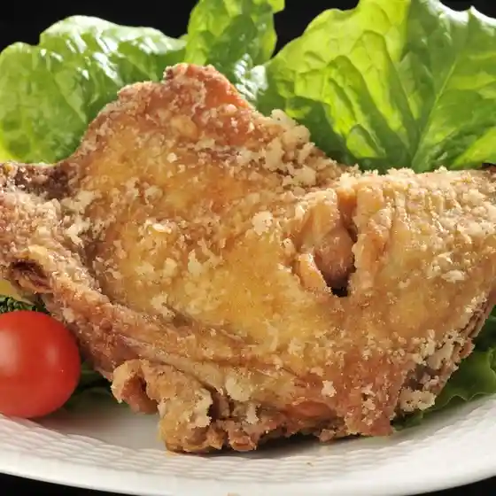
ナマステタージマハル ゆめタウン行橋店
Namasutetaajimaharu Yume Taun Yukuhashi Mise
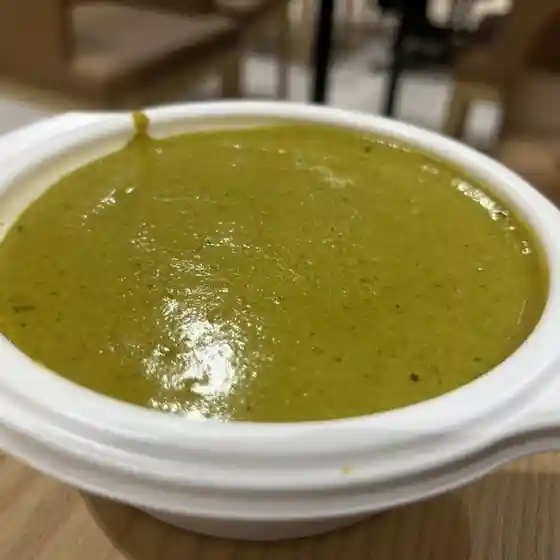
bagzy van zyl
Bagzy Van Zyl
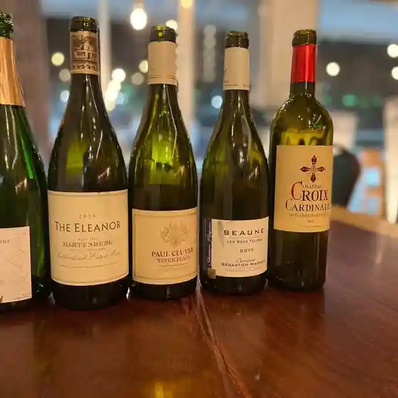
和処 つち谷
Wa Tokoro Tsuchi Tani
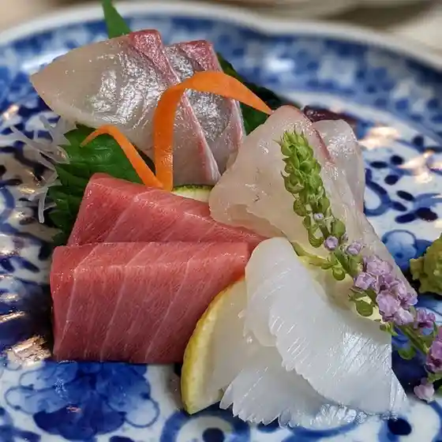
ピッツェリア ダ ジョルジオ
Pittsueria Da Jorujio
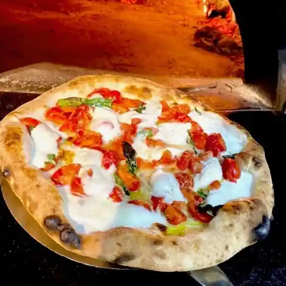
炙り処 晴屋
Aburi Tokoro Sei Ya
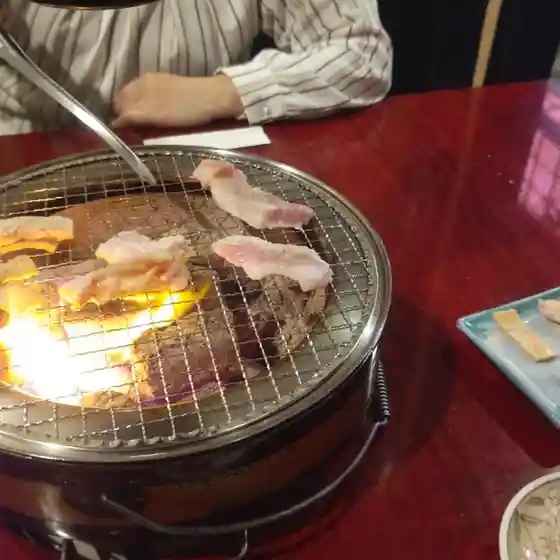
成
Sei
一椿 行橋店
Ichi Tsubaki Yukuhashi Mise
むくのほん
Mukunohon
楽食家 膳
Rakushoku Ie Zen
ぶんぶく茶屋 行橋店
Bunbuku Chaya Yukuhashi Mise
深夜食堂 さよ
Shinya Shokudou Sayo
笑顔や ハナタレ
Egao Ya Hanatare
うおいち
Uoichi
のんべえやっこ
Nonbeeyakko
宮崎牛 焼肉 TORAYA
Miyazaki Ushi Yakiniku Toraya
肉ヤキバル INASAL.SINUGBA
Niku Yakibaru Inasal . Sinugba
韓国ダイニングキッチン RYANG
Kankoku Dainingukitchin Ryang
旬彩酒房 いしん
Jun Sai Sake Bou Ishin
ケーキ パスタ&バール いすずカフェ
Keeki Pasuta &Amp; Baaru Isuzu Kafe
ごはんBarひいろ
Gohan Bar Hiiro
天麩羅と茶碗蒸し 凪春
Tenpura To Chawan Mushi Nagi Haru
Solasuna Dining
Solasuna Dining
sweets shop LULU
Sweets Shop Lulu
竹栄
Take Sakae
湖月堂 ゆめタウン行橋店
Kogetsu Dou Yume Taun Yukuhashi Mise
oeuf
Oeuf
四阿
Azumaya
パン工房 風
Pan Koubou Kaze
順寿し
Jun Hisashi Shi
食事処 しらかわ
Shokuji Tokoro Shirakawa
黒板
Kokuban
SUN
Sun
松のや 行橋中央店
Matsu Noya Yukuhashi Chuuou Mise
行橋檸檬
Yukuhashi Remon
とんぎゅう 行橋店
Tongyuu Yukuhashi Mise
三日月キッチン
Mikazuki Kitchin
快活CLUB 福岡行橋店
Kaikatsu Club Fukuoka Yukuhashi Mise
あけぼの食堂 行橋店
Akebono Shokudou Yukuhashi Mise
桜
Sakura
和田食堂
Wada Shokudou
居酒屋 なおたく
Izakaya Naotaku
パイセスⅡ
Paisesu Ⅱ
赤坂
Akasaka
ゆくベジ 行橋野菜総本舗
Yuku Beji Yukuhashi Yasai Sou Honpo
魚健寿司
Sakana Kenji Tsukasa
馬関そば
Bakan Soba
高庄
Taka Shou
もりべえ
Moribee
ウエスト 行橋店
Uesuto Yukuhashi Mise
マクドナルド 行橋ゆめタウン店
Makudonarudo Yukuhashi Yume Taun Mise
LAWSON 辻垣店
Lawson Tsuji Kaki Mise
酒と飯の﨑
Sake To Meshi No No
行橋からあげ358みの家
Yukuhashi Karaage 358 Mino Ie
2nd Labo
2Nd Labo
BAR315
Bar315
caffe Mattina
Caffe Mattina
ジョリーパスタ 行橋店
Joriipasuta Yukuhashi Mise
Kaen Yukuhashi Fukuoka Prefecture Kyushu
Kaen Yukuhashi Fukuoka Prefecture Kyushu
Kaen Yukuhashi Fukuoka Prefecture Kyushu
Kaen Yukuhashi Fukuoka Prefecture Kyushu
Kaen Yukuhashi Fukuoka Prefecture Kyushu
Kaen Yukuhashi Fukuoka Prefecture Kyushu
Kaen Yukuhashi Fukuoka Prefecture Kyushu
Kaen Yukuhashi Fukuoka Prefecture Kyushu
Kaneyu Unagiya Yukuhashi Fukuoka Prefecture Kyushu
Kaneyu Unagiya Yukuhashi Fukuoka Prefecture Kyushu
Kaneyu Unagiya Yukuhashi Fukuoka Prefecture Kyushu
Kaneyu Unagiya Yukuhashi Fukuoka Prefecture Kyushu
Kaneyu Unagiya Yukuhashi Fukuoka Prefecture Kyushu
Kaneyu Unagiya Yukuhashi Fukuoka Prefecture Kyushu
Kaneyu Unagiya Yukuhashi Fukuoka Prefecture Kyushu
Kaneyu Unagiya Yukuhashi Fukuoka Prefecture Kyushu
Hyakuman Goku Yukuhashi Fukuoka Prefecture Kyushu
Hyakuman Goku Yukuhashi Fukuoka Prefecture Kyushu
Hyakuman Goku Yukuhashi Fukuoka Prefecture Kyushu
Hyakuman Goku Yukuhashi Fukuoka Prefecture Kyushu
Hyakuman Goku Yukuhashi Fukuoka Prefecture Kyushu
Hyakuman Goku Yukuhashi Fukuoka Prefecture Kyushu
Hyakuman Goku Yukuhashi Fukuoka Prefecture Kyushu
Hyakuman Goku Yukuhashi Fukuoka Prefecture Kyushu
Wakamizu Yukuhashi Fukuoka Prefecture Kyushu
Wakamizu Yukuhashi Fukuoka Prefecture Kyushu
Wakamizu Yukuhashi Fukuoka Prefecture Kyushu
Wakamizu Yukuhashi Fukuoka Prefecture Kyushu
Wakamizu Yukuhashi Fukuoka Prefecture Kyushu
Wakamizu Yukuhashi Fukuoka Prefecture Kyushu
Wakamizu Yukuhashi Fukuoka Prefecture Kyushu
Wakamizu Yukuhashi Fukuoka Prefecture Kyushu
Mihachi Yukuhashi Fukuoka Prefecture Kyushu
Mihachi Yukuhashi Fukuoka Prefecture Kyushu
Mihachi Yukuhashi Fukuoka Prefecture Kyushu
Mihachi Yukuhashi Fukuoka Prefecture Kyushu
Mihachi Yukuhashi Fukuoka Prefecture Kyushu
Mihachi Yukuhashi Fukuoka Prefecture Kyushu
Mihachi Yukuhashi Fukuoka Prefecture Kyushu
Mihachi Yukuhashi Fukuoka Prefecture Kyushu
Haleiwa Kitchen Yukuhashi Fukuoka Prefecture Kyushu
Haleiwa Kitchen Yukuhashi Fukuoka Prefecture Kyushu
Haleiwa Kitchen Yukuhashi Fukuoka Prefecture Kyushu
Haleiwa Kitchen Yukuhashi Fukuoka Prefecture Kyushu
Haleiwa Kitchen Yukuhashi Fukuoka Prefecture Kyushu
Haleiwa Kitchen Yukuhashi Fukuoka Prefecture Kyushu
Bunbuku Chaya Yukuhashi Yukuhashi Fukuoka Prefecture Kyushu
Bunbuku Chaya Yukuhashi Yukuhashi Fukuoka Prefecture Kyushu
Bunbuku Chaya Yukuhashi Yukuhashi Fukuoka Prefecture Kyushu
Bunbuku Chaya Yukuhashi Yukuhashi Fukuoka Prefecture Kyushu
Bunbuku Chaya Yukuhashi Yukuhashi Fukuoka Prefecture Kyushu
Bunbuku Chaya Yukuhashi Yukuhashi Fukuoka Prefecture Kyushu
Bunbuku Chaya Yukuhashi Yukuhashi Fukuoka Prefecture Kyushu
Bunbuku Chaya Yukuhashi Yukuhashi Fukuoka Prefecture Kyushu
Bunbuku Chaya Yukuhashi Yukuhashi Fukuoka Prefecture Kyushu
Bunbuku Chaya Yukuhashi Yukuhashi Fukuoka Prefecture Kyushu
Marushin Yukuhashi Fukuoka Prefecture Kyushu
Marushin Yukuhashi Fukuoka Prefecture Kyushu
Marushin Yukuhashi Fukuoka Prefecture Kyushu
Marushin Yukuhashi Fukuoka Prefecture Kyushu
Marushin Yukuhashi Fukuoka Prefecture Kyushu
Marushin Yukuhashi Fukuoka Prefecture Kyushu
Marushin Yukuhashi Fukuoka Prefecture Kyushu
Marushin Yukuhashi Fukuoka Prefecture Kyushu
Kanadaya Yukuhashi Fukuoka Prefecture Kyushu
Kanadaya Yukuhashi Fukuoka Prefecture Kyushu
Kanadaya Yukuhashi Fukuoka Prefecture Kyushu
Kanadaya Yukuhashi Fukuoka Prefecture Kyushu
Kanadaya Yukuhashi Fukuoka Prefecture Kyushu
Kanadaya Yukuhashi Fukuoka Prefecture Kyushu
Kanadaya Yukuhashi Fukuoka Prefecture Kyushu
Kanadaya Yukuhashi Fukuoka Prefecture Kyushu
Agura Italian Yukuhashi Fukuoka Prefecture Kyushu
Agura Italian Yukuhashi Fukuoka Prefecture Kyushu
Agura Italian Yukuhashi Fukuoka Prefecture Kyushu
Agura Italian Yukuhashi Fukuoka Prefecture Kyushu
Agura Italian Yukuhashi Fukuoka Prefecture Kyushu
Agura Italian Yukuhashi Fukuoka Prefecture Kyushu
Agura Italian Yukuhashi Fukuoka Prefecture Kyushu
Agura Italian Yukuhashi Fukuoka Prefecture Kyushu
Stay
ホテルルートイン行橋
Hoteruruutoin Yukuhashi
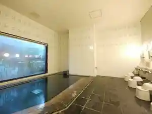
アパホテル〈福岡行橋駅前〉
Apahoteru < Fukuoka Yukuhashi Ekimae >
ＡＢホテル行橋
A B Hoteru Yukuhashi
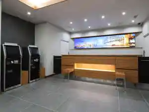
ビジネスホテルベル
Bijinesuhoteruberu
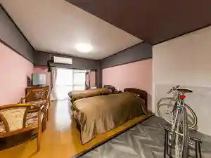
そらすな
Sorasuna
ようこそ月の宿へ
Youkoso Gatsu No Yado He
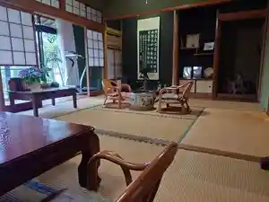